リンゴにゾウムシがいました。
2017/04/16
もうゾウムシが動いてるんですね。
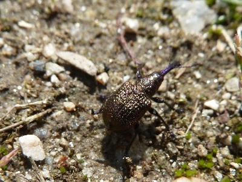
光が当たってギラギラしてました。
綺麗なんですけど、きっと害があるんだろうな。
2017/04/16
もうゾウムシが動いてるんですね。

光が当たってギラギラしてました。
綺麗なんですけど、きっと害があるんだろうな。
2016/04/03
嫌なやつがやって来た。
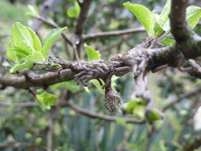
薬をまかなきゃ。
他の木もこれからドンドン出てくるんだろうなー。
2015/05/10
実が出来てると嬉しいですね。
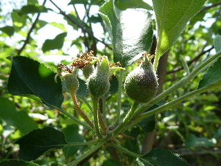
これがこのまま大きくなるといいんですけど、そうはきっといかないんだな。
落ちちゃうんだな。
2015/04/18
虫が飛んでるので、しなくてもいいかな？と思いながらも、受粉しました。
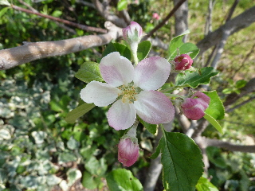
隣りの木の花を取って、花と花をくっつけるだけの簡単な作業です。
まだ木が小さいので、すぐに作業は終了しました。
2014/10/09
綺麗なんですけど、今咲くのはもったいないかな。
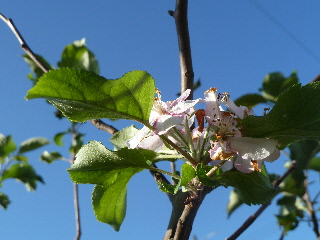
出来れば春に咲いて実をつけて欲しかったな。
2014/04/26
気持ち悪い。
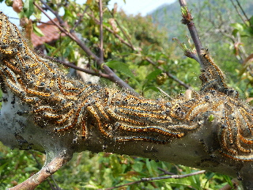
うじゃうじゃ毛虫がいました。
早く退治しなきゃ。
2013/09/14
毛虫がいっぱいだ！
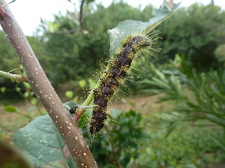
怖そうな虫ですね。
これはきっと触ってはいけない。
2013/06/09
リンゴが出来てた。
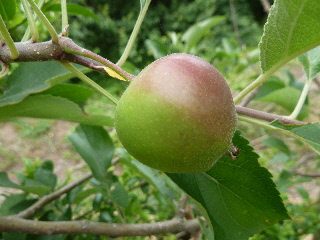
しかも、だいぶ大きい。色まで付いてる。
でもこれ一個だけです。
収穫まで落ちないで欲しいな。
2013/04/20
花が咲きました。
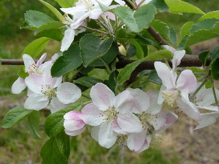
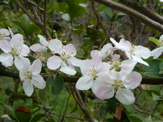
上と下ではリンゴの種類が違いますが、見た目は同じですね。
筆で受粉がちゃんと出来たかな？
2013/04/13
りんごに小さい蕾が出来ていました。
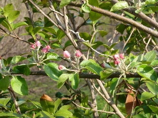
小さくて赤い蕾が並んでいるのが可愛いです。
見てて、なんか和みました。
リンゴを沢山食べたいですが、ちょっとしか収穫できません。